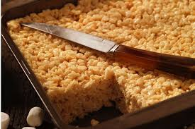

While it sounds like a movie snack, popcorn is emerging as a serious, sustainable alternative to petroleum-based polystyrene (Styrofoam).

Eco-Friendly: Researchers are working on building panels and insulation materials made from crushed popcorn. This plant-based option is meant to replace traditional boards in construction.
The popcorn material is great for keeping buildings in winter and cool in summer. It also helps block out noise.. It is really light which makes it easy to move around and install on construction sites.